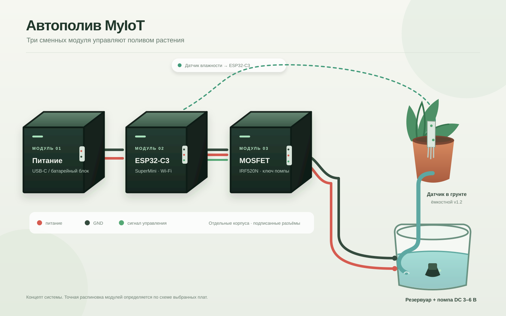

01 · Питание
Общий источник 5 В / 1 А для испытательной схемы. Достаточность при пуске помпы ещё проверить.
MyIoT · первый продукт
Контроллер считывает влажность грунта и управляет низковольтной помпой. Питание, ESP32-C3 и силовой модуль показаны отдельными сменными блоками.

Общий источник 5 В / 1 А для испытательной схемы. Достаточность при пуске помпы ещё проверить.
ESP32-C3 SuperMini получает данные ёмкостного датчика и включает полив по заданному сценарию.
MOSFET IRF520N коммутирует низковольтную помпу. Визуализация не предназначена для сетевого напряжения.
Почему MyIoT
Ценность проекта — не отдельная помпа, а система, которую можно обслуживать и расширять по частям.
01 · МОДУЛЬНОСТЬ
Питание, контроллер и силовой блок раздельны: замена или ремонт одного модуля не требует менять всю систему.
02 · ЛОКАЛЬНАЯ ЛОГИКА
Полив по датчику проектируется как локальный сценарий на контроллере — без обязательного облака для базовой функции.
03 · РАСШИРЯЕМОСТЬ
Автополив — первый сценарий платформы; новые функции можно добавлять совместимыми модулями, а не новой системой целиком.
04 · НИЗКОЕ НАПРЯЖЕНИЕ
Первый продукт ограничен низковольтной помпой и отдельным силовым модулем. Сетевые нагрузки в прототип не входят.
Это преимущества архитектуры и планируемого продукта, а не подтверждённые сравнительные результаты. Надёжность и ценность для покупателей предстоит проверить на физическом пилоте.